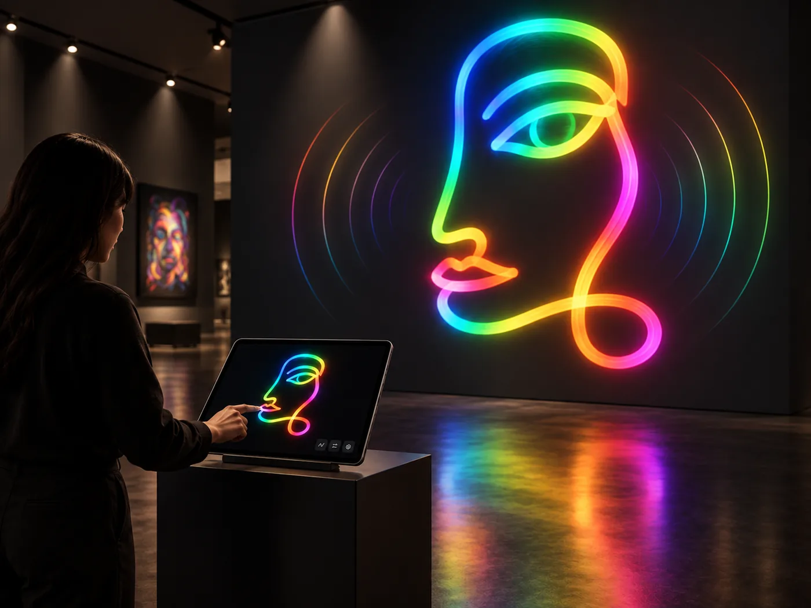
01 — FARBEEin Strich. Viele Nuancen.
Leuchtende Farbspektren auf einer schwarzen Leinwand geben deinen Ideen ihren eigenen Ausdruck.
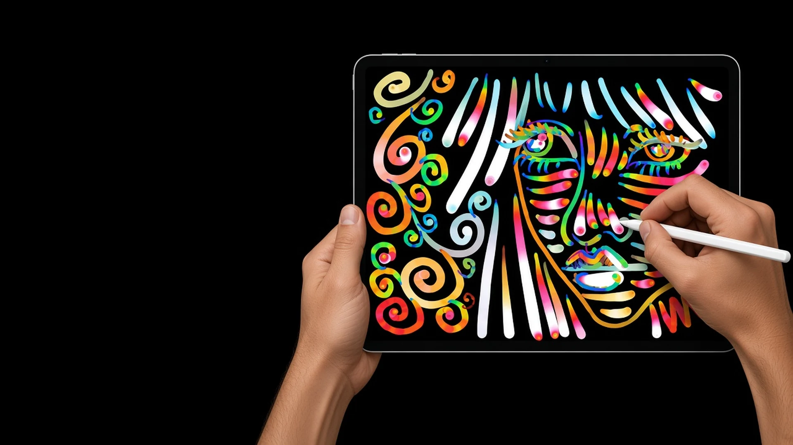
DIE AUDIOVISUELLE ZEICHEN-APP FÜR IPAD
Zeichne in leuchtenden Farben. Höre, wie deine Bewegung klingt. Mach aus einer Idee ein Erlebnis.
Zeichnen. Hören. Im Flow sein.
FÜR DEINE IDEEN. FÜR DEIN PUBLIKUM.Entstanden aus echter Zeichenpraxis.
01 / DEIN KREATIVER FLOW
AuVis macht den Moment des Zeichnens zum Erlebnis – mit Farbe, Bewegung und Klang.

01 — FARBELeuchtende Farbspektren auf einer schwarzen Leinwand geben deinen Ideen ihren eigenen Ausdruck.
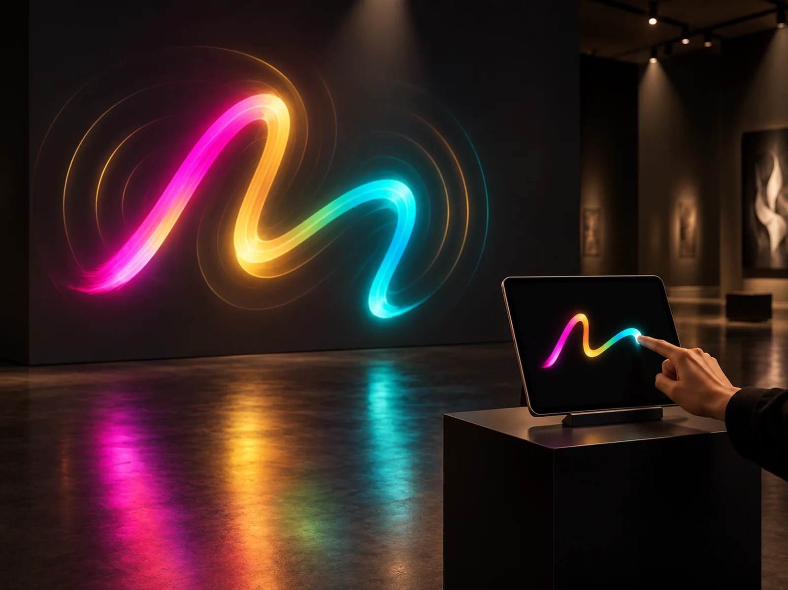
02 — KLANGWährend du zeichnest, erzeugt AuVis atmosphärische Klänge. Bild und Sound entstehen im selben Moment.
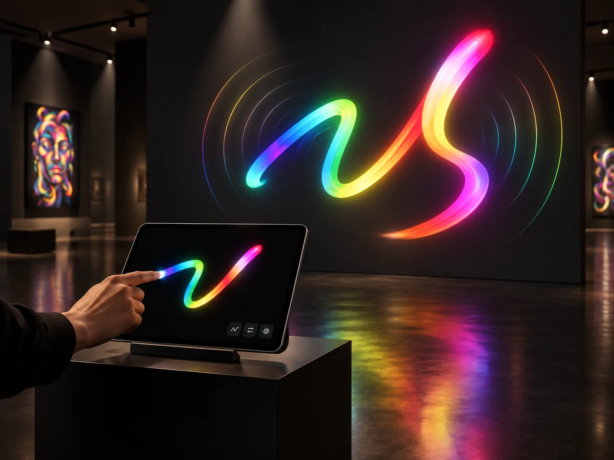
03 — BÜHNEIm Film hörst du den Strich und siehst, wie dasselbe Portrait groß im Raum ankommt.
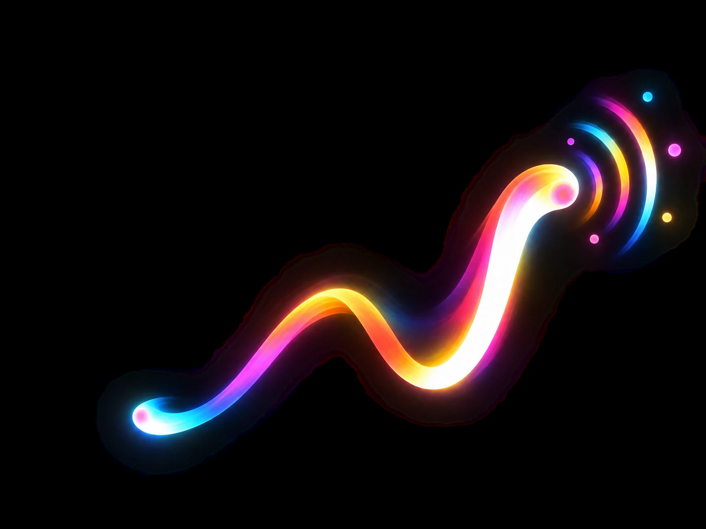
WENIGER MENÜ. MEHR MOMENT.
Eine schwarze Leinwand, ein ausdrucksvoller Strich und Klang, der auf deine Bewegung reagiert. Der Rest ist deine Idee.
02 / SO KLINGT DEIN STRICH
Du zeichnest auf dem iPad. AuVis macht genau diese Bewegung hörbar – mit Farbe, Klang und einem Bild, das groß im Raum ankommen kann.
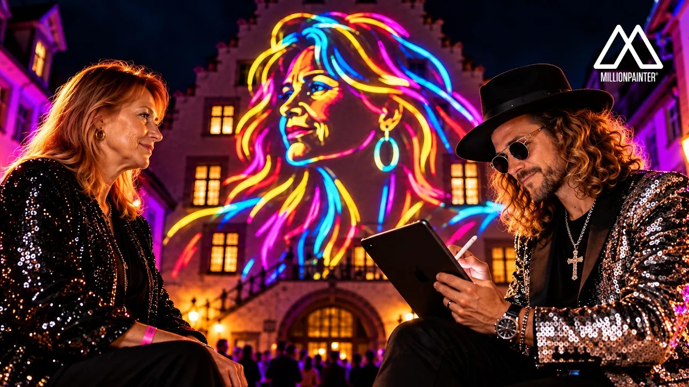
AUVIS IN AKTION · 1:14 MIN
Deine Bewegung formt die Linie auf dem iPad.
AuVis verwandelt den Zeichenprozess in Klang.
Mit externer Projektion wird dein Publikum Teil des Moments.
WAS DU DAMIT MACHEN KANNST
AuVis nimmt deine Zeichnung mit vor Publikum. Du arbeitest auf dem iPad, dieselbe Linie kann über Beamer oder Bildschirm im Raum liegen, und die Menschen sehen zu, wie das Bild entsteht.
1:28 Min. Dieser Film enthält auch zusätzliche Musik.
Direkt auf YouTube ansehen ↗AUVIS LIVE · 1:28 MIN
03 / DIE HAND HINTER AUVIS
gezeichnete Portraits.
Eine sehr persönliche App.
Phil Splash, bekannt als „The Million Painter“, zeichnet seit 2010 Menschen. Was in der Münchner U-Bahn begann, verfolgt heute ein großes Ziel: eine Million Gesichter.
AuVis ist aus dieser Praxis entstanden. Aus der Lust, Linie, Licht und Klang zusammenzubringen – und Menschen beim Entstehen eines Bildes mitzunehmen.
Mehr über Phil Splash ↗AUS PHILS ARBEIT
ALS LIVE-KÜNSTLER
04 / DEIN NÄCHSTER KREATIVER MOMENT
Für alle, die gerne zeichnen, mit Klang experimentieren oder aus einer Skizze eine Performance machen wollen.
AuVis bereitet seinen App-Store-Start vor. Hier siehst du schon jetzt, was die App ausmacht – und kannst Fragen direkt an uns stellen.
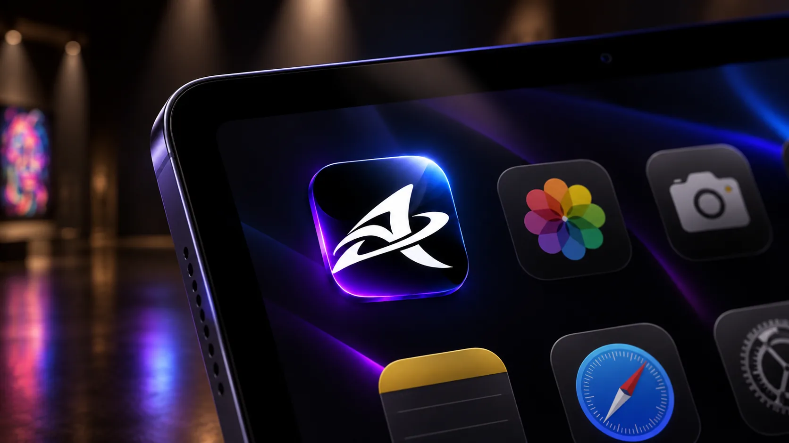
GEPLANTER EINMALKAUF · KEIN ABO
Einmal kaufen. Immer wieder kreativ werden.
Vorgesehener Preis für Deutschland. Noch nicht im App Store verlinkt. Der endgültige Preis und die Verfügbarkeit stehen zum Start fest.
WAS ENTSTEHEN KANN
Portraits aus der Hand, das Bild auf dem iPad und dasselbe Licht an der Wand.
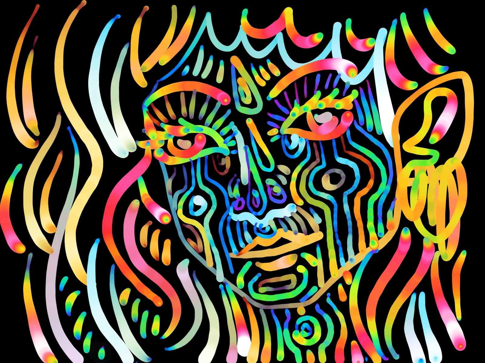
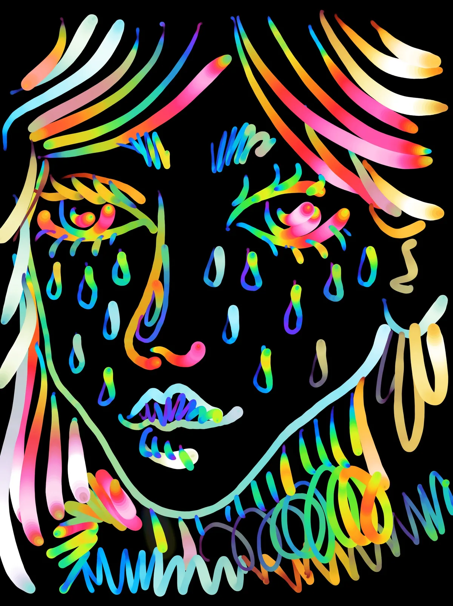
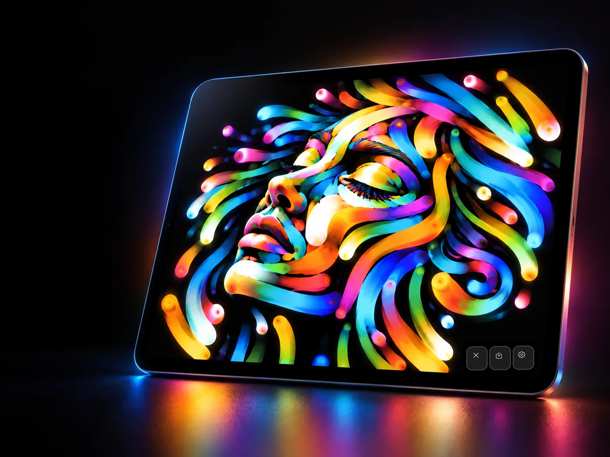
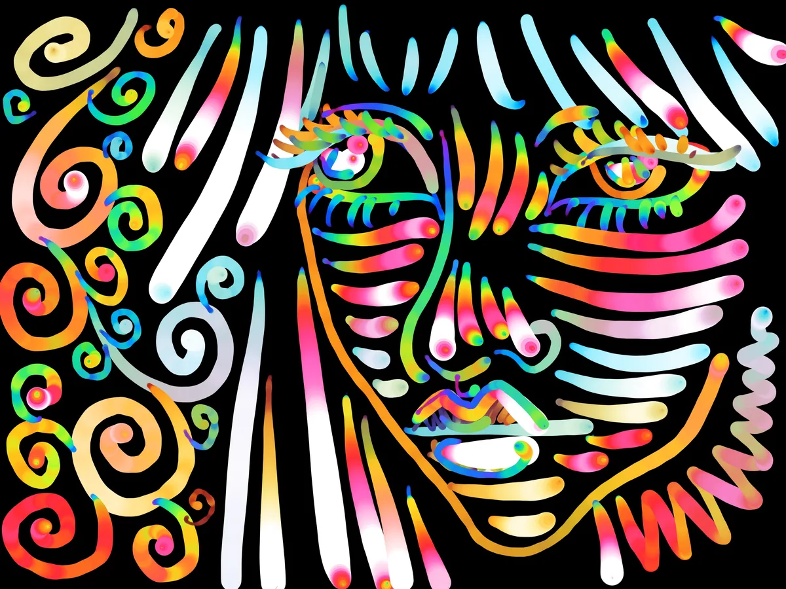
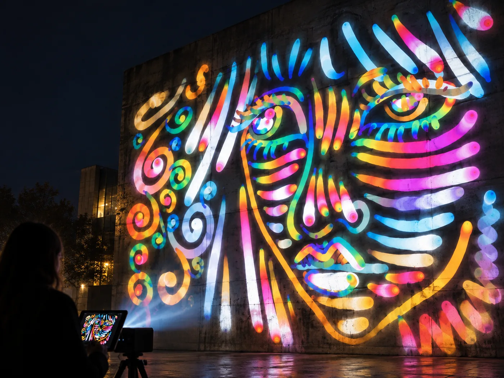
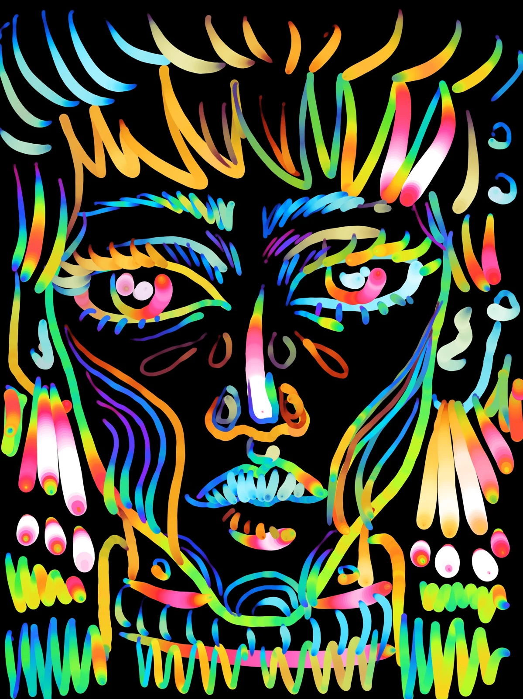
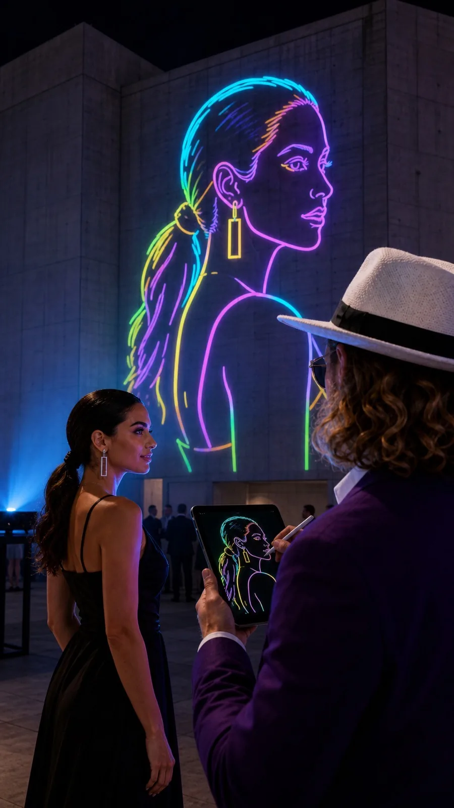
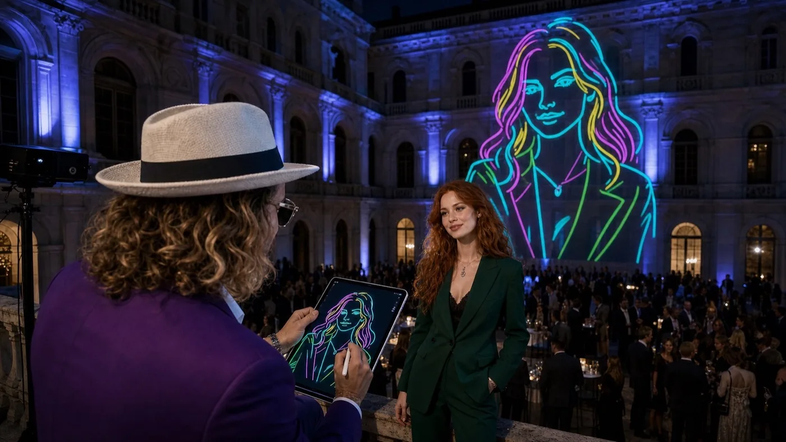
AuVis ist eine audiovisuelle Zeichen-App für das iPad von Phil Splash. Während du auf einer schwarzen Leinwand zeichnest, entstehen farbige Linien und atmosphärische Klänge, die auf deine Bewegungen reagieren.
Du kannst mit einfachen Linien und Formen beginnen. AuVis lädt zum Experimentieren mit Bild und Klang ein. Die gezeigten Portraits hat Phil Splash mit seiner langjährigen zeichnerischen Erfahrung erstellt.
Für das Zeichnen und Hören auf dem iPad brauchst du keinen Beamer. Ein Beamer oder externer Bildschirm kommt erst dazu, wenn du deine Zeichnung groß im Raum zeigen möchtest. Die Geräte und die Verbindung sind separat erforderlich.
Die verbindliche Liste unterstützter iPads, die minimale iPadOS-Version und die Apple-Pencil-Voraussetzungen werden zum App-Store-Start veröffentlicht. Der Apple Pencil wird im Live-Video verwendet. Funktionen wie Druck und Stiftgesten hängen vom verwendeten iPad und Pencil-Modell ab.
Ja. Du kannst den Klang ausschalten und dich ganz auf deine Linien und Farben konzentrieren.
Vorgesehen ist ein einmaliger Kaufpreis von 24 € in Deutschland, ohne Abo. Der App-Store-Start wird vorbereitet. Ein Download-Link und der endgültige Preis folgen zur Veröffentlichung.
Diese Website setzt keine eigene Besucheranalyse und keine Werbetracker ein. YouTube wird erst mit deiner Zustimmung geladen. Die Angaben zur App findest du separat unter App-Datenschutz.
AuVis. Zeichnen wird zum Erlebnis.